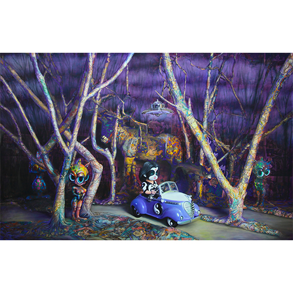
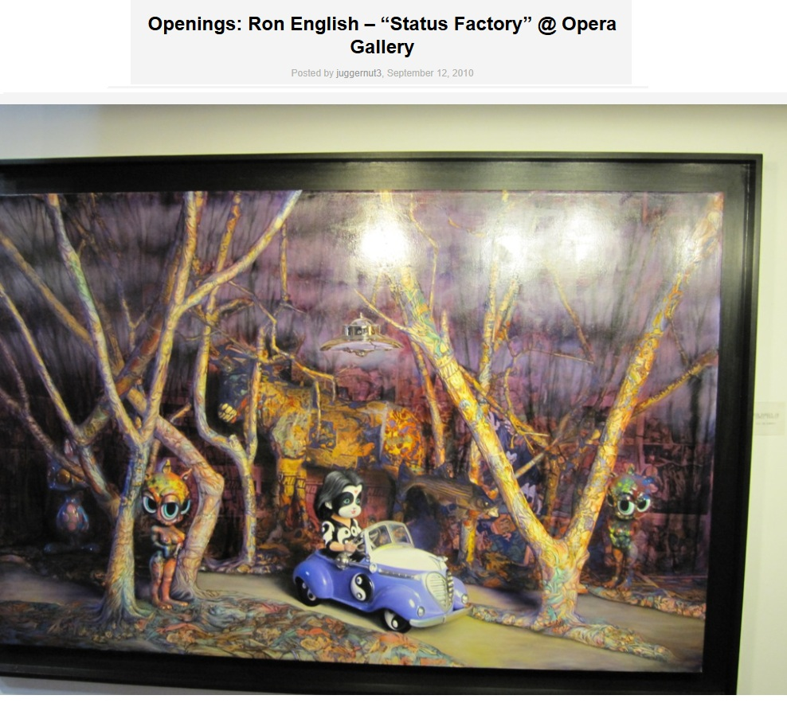
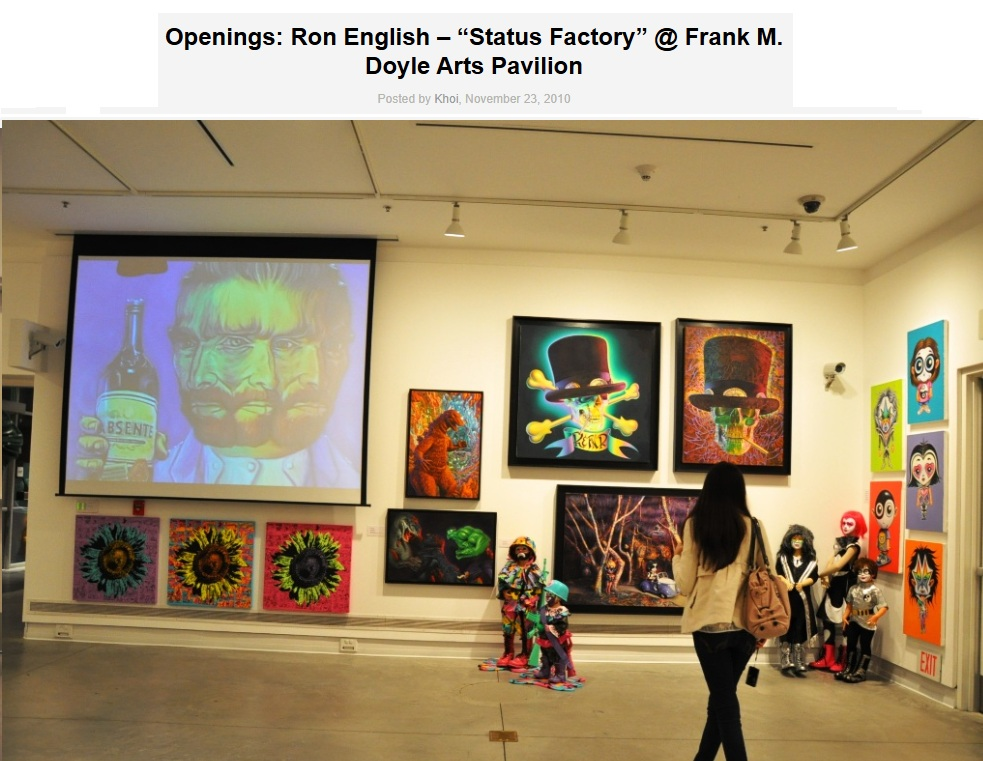
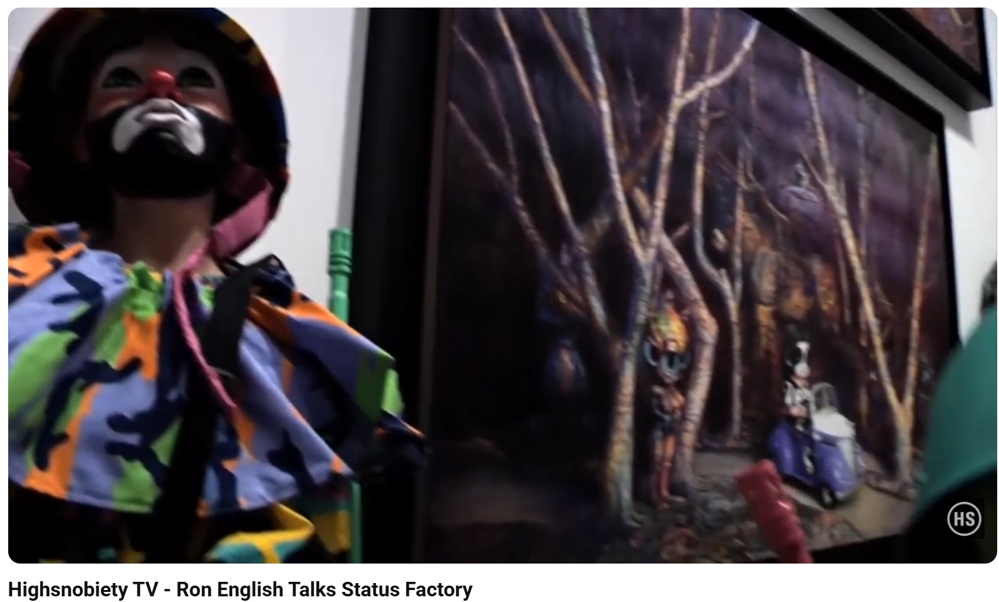

Exhibitions
Status Factory, Opera Gallery, New York, New York, US, September 12–October 29, 2010.
Status Factory – The Art of Ron English, Frank M. Doyle Arts Pavilion (Orange Coast College), Costa Mesa, California, US, November 12–December 17, 2010.
Notes
This work appears in Arrested Motion’s opening and exhibition photographs for Ron English’s Status Factory at Opera Gallery, available here, accessed April 11, 2026.
It also appears in Arrested Motion’s opening and exhibition photographs for Status Factory – The Art of Ron English at the Frank M. Doyle Arts Pavilion, available here, accessed April 12, 2026.
This work appears at 0:54 in Highsnobiety TV’s YouTube video Ron English Talks Status Factory, available here, accessed April 11, 2026.

Ancillary Documentation


